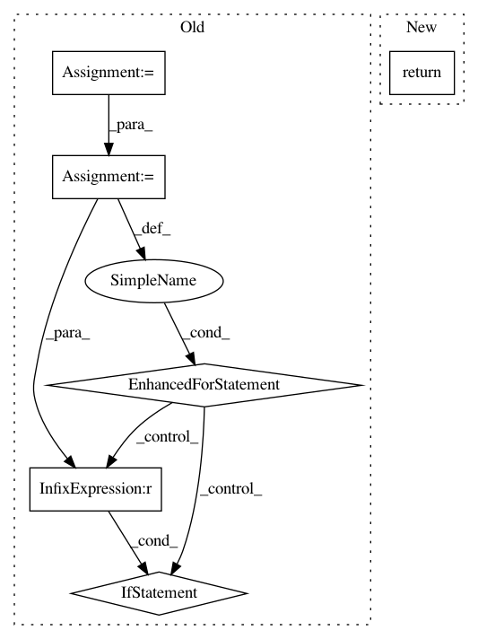

a63319be4c70271f229c9f5c3423a97c7535f08b,coremltools/models/utils.py,,replace_custom_layer_name,#Any#Any#Any#,718
Before Change
An mlmodel spec.
layers = get_custom_layers(spec)
for layer in layers:
if layer.custom.className == oldname:
layer.custom.className = newname
def is_macos():
Returns True if current platform is MacOS, False otherwise.
return sys.platform == "darwin"
After Change
@deprecated
def replace_custom_layer_name(spec, oldname, newname):
return _replace_custom_layer_name(spec, oldname, newname)
def _replace_custom_layer_name(spec, oldname, newname):
In pattern: SUPERPATTERN
Frequency: 3
Non-data size: 6
Instances
Project Name: apple/coremltools
Commit Name: a63319be4c70271f229c9f5c3423a97c7535f08b
Time: 2020-05-18
Author: aseem.elec@gmail.com
File Name: coremltools/models/utils.py
Class Name:
Method Name: replace_custom_layer_name
Project Name: apple/coremltools
Commit Name: a63319be4c70271f229c9f5c3423a97c7535f08b
Time: 2020-05-18
Author: aseem.elec@gmail.com
File Name: coremltools/models/utils.py
Class Name:
Method Name: get_custom_layer_names
Project Name: apple/coremltools
Commit Name: a63319be4c70271f229c9f5c3423a97c7535f08b
Time: 2020-05-18
Author: aseem.elec@gmail.com
File Name: coremltools/models/utils.py
Class Name:
Method Name: get_custom_layers